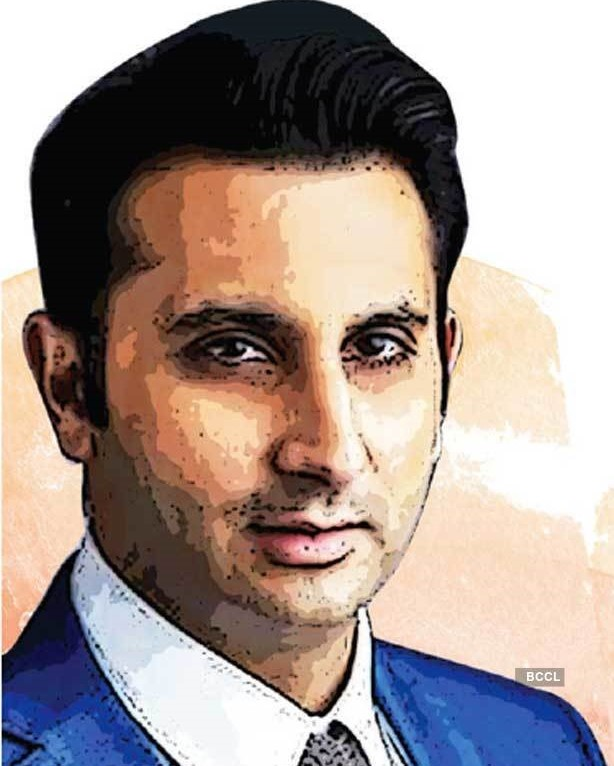

Hello, I am the
Adar poonawalla
Adar Poonawalla, Chief Executive Officer (CEO) and owner of the Serum Institute of India (SII), on Saturday said he it was good news that Covishield - India-made version of AstraZeneca Covid vaccine - is now recognised and accepted by 16 European countries as an acceptable vaccine for entry
See More